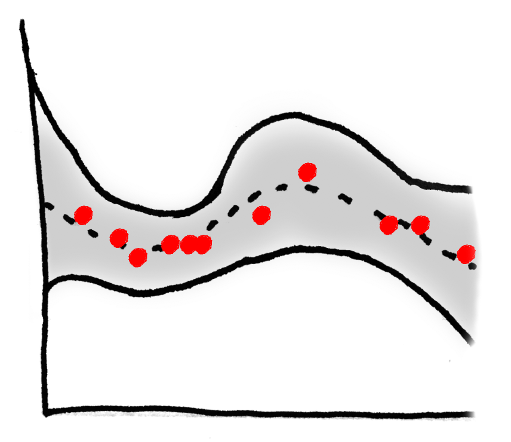
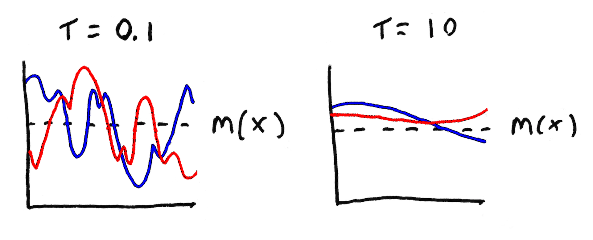

Gaussian Processes
Intro
I've spent a lot of time recently reading (and using) gaussian processes ($GP$). I think they're really cool, and wanted to take the time to write up a short, easily accessible tutorial on them. This should serve as a valuable exercise in information distillation for me. I also hope that prospective readers will learn to find these ideas as fun, beautiful, and intuitive as I do.
I'm going to start by telling you what a $GP$ looks like with broad scketches. I'm then going to go back and explain things from the beginning. What's a multivariate Gaussian? Bayesian regression? Once we have these two pieces sketched out and colored to some degree of detail, I'm going to go back over $GP$ and how to use it for regression. I'll also layer on a little more information so you understand it a little more deeply. Hopefully some of this'll make sense and you'll have learned something. So let's get to it!
Gaussian Processes
A $Gaussian\ Process$ is an extension of the multivariate gaussian to infinite dimensions. This means that you can give it a vector ${\bf x} \in \mathbb{R}^n$ (for any $n$) and the process will spit back a new vector ${\bf y} \in \mathbb{R}^n$. Every component of ${\bf y}$ represents the probability of observing $x_i$ according to some gaussian living in dimension $i$.
Since $GP$'s act like probability distributions, you can do more than just ask "what's the probability of this ${\bf x}$ I have here?" You can sample the $GP$ to draw brand new vectors from the "distribution". What's the dimensionality of these samples? Whatever you want. So if we take an $infinite$-dimensional sample from the $GP$, we're effectively drawing an entire functions from a gaussian-like distribution! If you don't see this, note that every possible $d \in \mathbb{R}$ can be deterministically mapped to some element of the infinite-dimensional vector we just drew. Boom. That's a function.
This is why some people like to think of $GP$'s as not just a distribution over random vectors but also over random $functions$. To avoid confusion, though, I should be clear about what a random function is. A random function is NOT a function whose outputs are stochastic in any way. A random function is one that's chosen from a set of functions probabalistically. Once selected, this function has deterministic outputs for each input.
To get some intuition for all of this, let's look at a $GP$:

The data are one-dimensional, and we want to predict the value of $y$. On the left we see the distribution of functions that the $GP$ thinks might explain these data. All the shaded bits correspond to the 95% CI of the distribution, and the dotted line is the mean of the process. The lines we sample from this $GP$ are most likely to live in that shaded area. On The right I've drawn two functions that were sample from the distribution on the left.
The last thing I'll say about $GP$'s during this prelude is that they have some nice properties which allow them to be fit into a Bayesian regression framework quite easily. I.e. we can use a $GP$ to come up with predictions for some unknown test points, based on a bunch of known training points. More on this later.
Multivariate Gaussians
The picture below shows a multivariate gaussian in two dimensions.

A random variable ${\bf x} \in \mathbb{R}^n$ follows a multivariate gaussian distribution in $n$ dimensions with mean ${\bf \mu} \in \mathbb{R}^n$ and covariance $\Sigma$ if,
$$ p({\bf x}; {\bf \mu}, \Sigma) = \frac{1}{(2\pi)^{n/2}\vert\Sigma\vert^{1/2}} exp \left(-\frac{({\bf x} - {\bf \mu})^{T} \Sigma^{-1} ({\bf x} - {\bf \mu}) }{2} \right) $$
We also say ${\bf x} \sim N(\mu, \Sigma)$. It's a pretty straightforward generalization of the traditional gaussian I'm sure you're familiar with. A few properties to note, though:
- The marginal densities of the multivariate are gaussian as well. For example, since ${\bf x} \sim N(\mu, \Sigma)$, then $x_1 \sim N(\mu_1, \Sigma_{11})$. You can see this visually in the above piture. Notice how the lower bit, the data are still normally distributed when flattened against each axis.
- $\Sigma$ describes the covarience between each pair of features. So it's symmetric, and all it's values are positive (symmetric positive definite).
- The conditional densities are gaussian.
- Sum of gaussians is gaussian.
Bayesian Regression
In regression problems, we have a dataset ${\bf D} = (X, Y)$, where
\begin{align}
X &= \begin{bmatrix} {\bf x}_1 & {\bf x}_2 &\cdot\cdot\cdot& {\bf x}_m \end{bmatrix} \\
Y &= \begin{bmatrix} y_1 & y_2 &\cdot\cdot\cdot& y_m \end{bmatrix}
\end{align}
The point of most learning algorithms is to come up with some ${\bf w}$ such that each ${\bf w}^T {\bf x}_i$ is reasonably close to $y_i$. Of course we're not going to hit the $y_i$'s right on the dot, though. It's pretty standard in statistics to say that the "noise" in our predictions are normally distributed, and that
$$ y_i = {\bf w}^T {\bf x} + \epsilon_i $$
Where all the $\epsilon_i$'s are i.i.d. under $N(0, \sigma^2)$. This is a nice way of thinking about things because it lets us model the conditional probability of $y_i$. $\epsilon_i$, the error, is equal to $y_i - {\bf w}^T {\bf x}_i$. So this difference term also follows $N(0, \sigma^2)$ and we know $P( Y \vert X, {\bf w})$, the probability of getting any $y_i$, provided we already have ${\bf w}$ and ${\bf x}_i$!
We know the conditional probability of the data given our paramters. We want to flip that around to get the probability of our parameters given the data, because the most probable parameters, then, would be the best-fitting ones. To do this with Bayes rule, we need some kind of prior over ${\bf w}$. We often use ${\bf w} \sim N(0, \tau^2 I)$ which encourages parameters to stay near zero. Now, using Bayes rule, we can get the parameter posterier distribution:
$$ p({\bf w}, X \vert Y) = \frac{ p({\bf w}) p( Y \vert X, {\bf w}) }{\int_{{\bf w}'} p({\bf w}') p( Y \vert X, {\bf w}') d{\bf w}} $$
The really cool thing about Baysian regressian is what happens at test time. On each test point ${\bf x}_*$, the model gives back an entire probability distribution over possible outputs instead of a single guess. This is called the
predictive posterior distribution and it looks like this:
$$ p(y_* \vert {\bf x}_*, {\bf D}) = \int_{\bf w} p(y_* \vert {\bf x_*}, {\bf w}) p({\bf w}, X \vert Y) d{\bf w} $$
Now the REALLY cool thing about Baysian regression is that all the integrals you saw are actually tractable! This means there's a closed form solution for both the probability of the weights AND the posterior predictive distribution!!!! I'm going to spare you the math, but here's the distributions:
\begin{align}
p({\bf w}, X \vert Y) &\sim N \left( \frac{ A^{-1} X^T Y }{ \sigma^2}, A^{-1} \right) \\
p(y_* \vert {\bf x}_*, {\bf D}) &\sim N\left(\frac{ {\bf x}^T_* A^{-1} X^{T} Y }{\sigma^2 }, {\bf x}_*^T A^{-1} {\bf x}_* + \sigma^2 \right)
\end{align}
Where $A = (1/\sigma^2)X^TX + (1/\tau^2)I$. These terms look pretty messy and they are, but I think one thing worth noticing is the presence of both $\tau$ and $\sigma$ in the variation both distributions. This reflects the fact that the uncertainty of our predictions comes from both noise in the data (the $\epsilon$'s) and uncertainty in our choice of parameters. This should make you feel better than regular linear regression, which has no way to model uncertainty in the parameters.
If you look at a Bayesian regression, you can see this additional modeling at play: the posterier predictive distribution (95% confidence interval is shaded, MLE estimate is dotted) tightens up when it encounters densely distributed data.

Gaussian Processes
We've already developed some intuition for the $GP$. If you recall, they're like multivariate Gaussians except you can ask for the probability of ${\bf x} \in \mathbb{R}^n$ for
any $n$. Furthermore, we can interpret $GP$'s as distributions over functions if we choose $n$ to be $\infty$. $GP$'s do this by making use of a
mean function $m(\cdot)$ and
covarience kernel $k(\cdot, \cdot)$. Given any set of elements $x_1, ..., x_n \in \mathbb{R}$, the returned set of random variables $GP(x_1), ..., GP(x_n)$ are distributed as,
$$\begin{bmatrix} GP(x_1) \\ \vdots \\ GP(x_n)\end{bmatrix} \sim N\left(\ \begin{bmatrix} m(x_1)\\ \vdots \\ m(x_n) \end{bmatrix}\ ,\ \begin{bmatrix}k(x_1, x_1)& \cdots & k(x_1, x_m)\\ \vdots & \cdots & \vdots \\ k(x_m, x_1) & \cdots & k(x_m, x_m) \end{bmatrix} \ \right) $$
There are no constraints on $m(\cdot)$, but in order to be valid, $k(\cdot, \cdot)$ must be positive and communitive (recall the very similar constraint placed on the covarience matrix of a multivariate gaussian).
A popular choice for the covarience kernel is the
squared exponential kernel:
$$ k(x, y) = exp\left(- \frac{\vert\vert x - y \vert\vert^2}{2\tau^2 } \right) $$
Intuitively, using this kernel means that the closer $x$ and $y$ are, the more correlated $GP(x)$ and $GP(y)$ will be. $\tau$ is a hyperparameter that controls the likelihood that returned functions will be smooth, i.e., the higher the $\tau$, the higher the covarience between distant function values. You can see a concrete example of this below. I've drawn two functions pulled from a gaussian process where $m(x)$ is some constant.

Gaussian Processes for Regression
We can leverage some of the properties of the $GP$ within the framework of Baysian regression. If $D = (X, Y)$ is a training set of examples and ground truth values, then in the gaussian processes regression model,
$$ y_i = f(x_i) + \epsilon_i $$
where each $\epsilon_i \sim N(0, \sigma^2)$, and we assume a 0-mean $GP$ as a prior distribution over $f(\cdot)$'s:
$$ f(\cdot) \sim GP(0, k(\cdot, \cdot)) $$
Now, say we have a test set $T = (X^*, Y^*)$ for whom we want to make predictions. If we wanted to use Bayesian linear regression, we'd use Bayes rule to get the probability of some parameters given the data, take some parameters, and use these to generate a distribution over predictions. For Gaussian process regression, things are actually much simpler!
I'm going to sketch out the derivation. Note, though, that my notation is going to be pretty loose. Hopefully that'll make things easier and faster to understand. We start by jamming together the training and test data into a single vector:
\begin{align}
\begin{bmatrix} Y \\ Y^* \end{bmatrix} = \begin{bmatrix}f(X) \\ f(X^*)\end{bmatrix} + \begin{bmatrix}\epsilon \\ \epsilon^*\end{bmatrix} &\sim N\left(0,\ \begin{bmatrix} k(X, X) & k(X, X^*) \\ k(X^*, X) & k(X^*, X^*) \end{bmatrix} \right) + N\left(0,\ \begin{bmatrix}\sigma^2\ I & 0 \\0 & \sigma^2\ I \end{bmatrix}\right) \\
&= N\left(0,\ \begin{bmatrix} k(X, X) + \sigma^2\ I & k(X, X^*) \\ k(X^*, X) & k(X^*, X^*) + \sigma^2\ I \end{bmatrix} \right)
\end{align}
Now all we need to do is plug in some rules for conditioning Gaussians, and condition $Y^*$ on everything else:
$$ P(Y^* \vert Y, X, X^*) \sim N({\bf \mu}, {\bf \Sigma}) $$
where
\begin{align*}
{\bf \mu} &= k(X^*)(k(X, X) + \sigma^2\ I)^{-1} Y \\
{\bf \Sigma} &= k(X^*, X^*) + \sigma\ I - k(X^*, X)(k(X, X) + \sigma^2\ I)^{-1} k(X, X^*)
\end{align*}
Big scary equations, yeah, but it's also a closed-form equation that describes exactly the posterior predictive probability distribution. That's seriously it! It's all done. We have a probability distribution over our predictions. Easy, huh? And
COOL too!!
Reading List:
- http://cs229.stanford.edu/section/cs229-gaussian_processes.pdf
- http://videolectures.net/gpip06_mackay_gpb/
- https://arxiv.org/pdf/1505.02965v2.pdf
- http://www.gaussianprocess.org/gpml/chapters/RW2.pdf